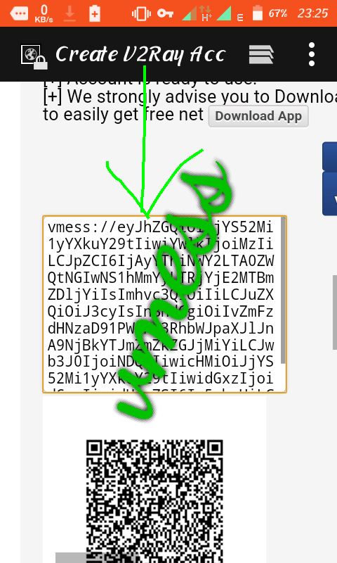

V2ray client apps are apps that operate on a software of v2-ray networking invented by the chinese which involves communication between server and client..v2ray protocals are vmess,vless,socks,shadowsocks and trojan Such apps include....
Napsternetv
kitsunebi
v2rayng
V2free
V2fly
In this tutorial, am going to use "NAPSTERNETV"
NAPSTERNETV
STEP 1
Firstly.....download Napsternetv
STEP 2
Open app..buy a config from a config maker then enjoy freenet unlimited on airtel uganda..If you have no money for a file..dont worry..follow the steps below to see how you can make a configuration
STEP 3
Open your chrome bowser and type fastssh.com Click on v2-ray servers then a list of servers in different continents will be displayed..select your desired country continue.. Input your name and a working SNI bug host then finally solve the CAPTCHA challenge then create your account..
STEP 4
Your vmess will be automatically generated!! as shown below;

STEP 5
Your configuration will be successfully imported and then tap on it and press connect..Enjoy unlimited free net on airtel uganda.. If you want to know more about napsternetv config making forexample.. Buying a VPS etc 100% working, just click on on support on the homepage dropbar..thank you..